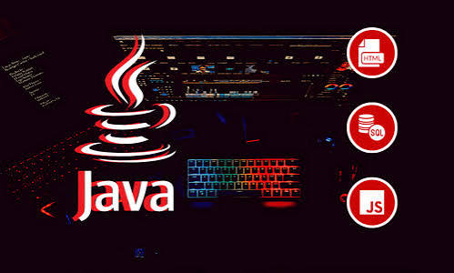
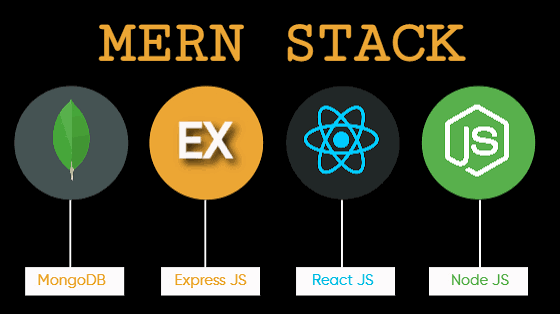
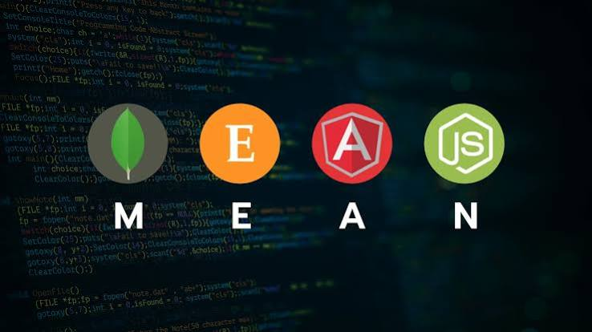

Python is a popular, high-level programming language used for backend development, automation, data processing, and many other applications.

Java Full Stack Development is the process of building complete web applications using Java for backend development along with frontend technologies such as HTML, CSS, and JavaScript. .

MERN Full Stack Development is a modern approach to building complete web applications using MongoDB, Express.js, React.js, and Node.js. It allows developers to work on both the frontend and backend using JavaScript.

MEAN Stack is a modern JavaScript-based technology stack used to build complete web applications from frontend to backend.